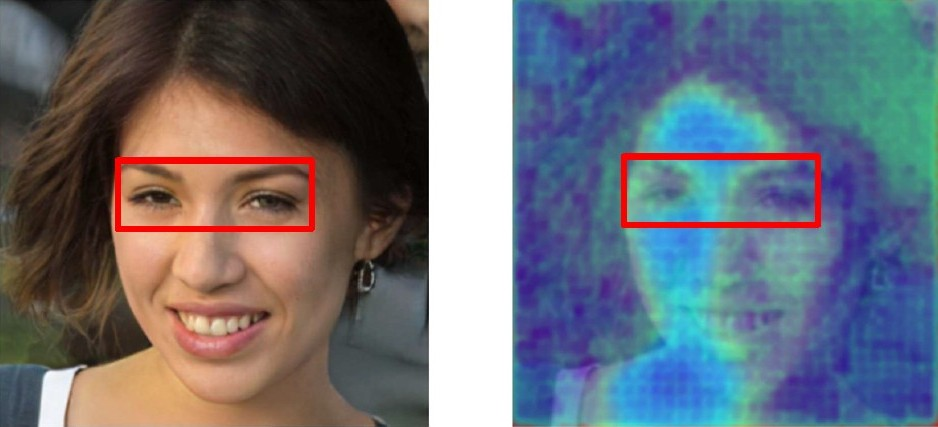

Here are some techniques to help identify manipulated images:
Photo manipulation raises important ethical questions:
These are some of the most frequently used tools for photo manipulation:
Photo manipulation is nearly as old as photography itself: